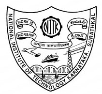

Deepthi Antony
|
I am a graduate student at University of Michigan. I currently specialize in the area of Data Science and Machine learning. Proficient in engineering and programming softwares such as: |
Education

|
University of Michigan (2021 – )Master of Engineering - Data Science and Machine Learning |
|  |
National Institute of Technology Karnataka (2013 – 2018)Doctor of Philosophy - Electrical and Electronics Engineering |
National Institute of Technology Karnataka (2011 – 2013)Master of Technology - Power and Energy Systems |
|
Anna University Chennai (2006 – 2010)Bachelor of Engineering - Electrical and Electronics Engineering |
Certifications
 |
Machine Learning - Stanford University |
|
Python for Everybody Specialization - University of Michigan |
| Lean Six Sigma Green Belt - Lean Sigma Corporation |
Technical Skills
- Programming Languages: Julia, Python, MATLAB, SQL
- Machine Learning: Regression, Classification, Deep Learning, Dimensionality Reduction, and Recommender System
- Frameworks/Applications: Pytorch, Tensorflow, Keras, AWS, Google Colab, Jupyter, Minitab (Statistics)
Relevant Courses
- Data Science: Computational Data Science and Machine Learning, Data Science and Machine Learning Design Laboratory, Deep Learning for Computer Vision
- Mathematics: Probability and Random Processes, Computational Linear Algebra, Optimization Techniques
- Coursera: Machine Learning by Stanford University, Python for everybody specialization by University of Michigan
Projects
- Handwriting recognition using Nearest subspace classification and Deep Nets
- Designed a deep neural network with TensorFlow to classify all 10 digits (0-9) and computed the confusion matrix
- Computed the optimum k value for which the nearest subspace algorithm achieved an accuracy of 94.55%
- Forecasting the COVID-19 trend using polynomial regression
- Used polynomial regression to develop a model to predict the trajectory of COVID-19 from May 5, 2020
- The model is developed with parameters that produce the smallest fitting error and the best future forecast
- Developed a novel non-iterative algorithm for predicting the location of partial discharge in transformers | Work published in IEEE Transactions on Power Delivery
- The proposed method is analysed by applying to the data taken from the published literature
- The computational time required for the noniterative method is significantly less compared to existing methods
- Developed a data anomaly detection procedure for identifying and mitigating effect of erroneous measurement | Work published in IET Science, Measurement Technology
- Developed two mathematical methods using Newton’s method & discriminant to analyze the input time measurements
- Improved partial discharge localization accuracy by removing erroneous time measurements
- Statistical post processing of estimated data to improve partial discharge localisation accuracy | Work presented in IEEE International Conference
- Histograms are plotted for PD source coordinates data. Outliers are identified by estimating the mean and standard deviation
- Removing the outliers improved the accuracy of location identification
Published Papers
- Deepthi Antony and G. S. Punekar, “Noniterative Method for Combined Acoustic-Electrical Partial Discharge Source Localization”, IEEE transactions on power delivery vol. 33, no. 4, pp. 1679 - 1688, 2018 (SCI-indexed, Impact factor: 4.415)
- Deepthi Antony and G. S. Punekar, “Identification of invalid time-delay groups using discriminant and jacobiandeterminant in acoustic emission PD source localisation,” IET Science, Measurement Technology, vol. 11, no. 3, pp. 315–321, 2016 (SCI-indexed, Impact factor: 1.895)
- T. Bhavani Shanker, H. N. Nagamani, Deepthi Antony and G. S. Punekar, “Effects of transformer-oil temperature on amplitude and peak frequency of partial discharge acoustic signals”, IEEE transactions on power delivery vol. 33, no. 6, pp. 3227 – 3229, 2018 (SCI-indexed)
- Deepthi Antony, Prasannajit Sahoo and G. S. Punekar, “On choice of velocity for acoustic-emission linear-source-localizationin metallic medium”, The Journal of CPRI, Vol. ll, No.4, December 2015 pp.689-696.
- Deepthi Antony, G. S. Punekar and N. K. Kishore, "Improvements in an Iterative Method for Localization of Partial Discharge Source in Oil Insulation", Electrostatics Joint Conference, Boston, USA. 2018.
- Deepthi Antony, G. S. Punekar and N. K. Kishore, “Effects of error in time-delay on AEPD source localization using Newton’s method : Numerical experimentation”, IEEE International Conference on Condition Assessment Techniques in Electrical Systems (CATCON), Ropar, 2017, pp. 166-169.
- Deepthi Antony and G. S. Punekar, "Improvements in AEPD location identification by removing outliers and post processing," IEEE International Conference on Condition Assessment Techniques in Electrical Systems (CATCON), Bangalore, 2015, pp. 66-69.
- Gururaj S. Punekar, Deepthi Antony, Bhavani Shanker T., Nagamani H. N. and Kishore N. K.,“Genetic algorithm in location identification of AEPD source: Some aspects”. IEEE International Conference on Condition Assessment Techniques in Electrical Systems (CATCON), Calcutta, 2013, pp. 386-390.
- T. Bhavani Shanker, H. N. Nagamani, Deepthi Antony, Gururaj S Punekar, “Case Studies on Transformer Fault Diagnosis using Dissolved Gas Analysis”, IEEE PES Asia-Pacific Power and Energy Engineering Conference (APPEEC), Bangalore, 2017, p. 538.
- Gururaj S Punekar, Kallapu Jyosthna, Deepthi Antony, “On Location Identification of AEPD Source” National Conference on High Voltage Engineering & Technology (NCHVET), Bangalore, 2017, pp. 238-241.
- G. S. Punekar, Deepthi Antony, A. Aiswarya, and T. Bhavani Shanker, “Effects of error in acoustic velocity on partial discharge localization in power transformers over its working temperature range”, National Conference on Condition Monitoring (NCCM2017), Kalpakkam, 2017, p. 3A-D.
Complete list of publications can be found at google scholar page.
Work History
-
Assistant Professor at Ramaiah University Of Applied Sciences
(Jul 2018 - Jul 2019) -
Assistant Professor at SCMS Group Of Institutions
(Jun 2013 - Dec 2014)
Awards and Honors
- Secured first place in student paper competition in Electrostatics Joint Conference held in Boston University, USA, June, 2018.
- Awarded financial grant to attend the 2018 Electrostatic Joint conference in Boston University, USA by the Science and Engineering Research Board (SERB), government of India
- Received postgraduate scholarship from Ministry of Education, Govt. of India for M.Tech and Ph.D
- Represented Kerala State, Anna University and NITK Surathkal in National level Basketball Championships.